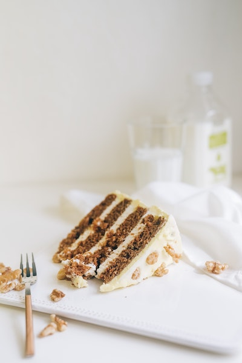

Carrot Cake Recipe

Description
Delight friends with an afternoon tea that includes this easy carrot cake. You can bake the cake, freeze it and just drizzle over the icing on the day
Ingredients
- 175g light muscovado sugar
- 175ml sunflower oil
- 3 large eggs, lightly beaten
- 140g grated carrots (about 3 medium)
- 100g raisins
- grated zest of 1 large orange
- 175g self-raising flour
- 1 tsp bicarbonate of soda
- 1 tsp ground cinnamon
- ½ tsp grated nutmeg (freshly grated will give you the best flavour)
- 175g icing sugar
- 1½-2 tbsp orange juice
Steps
- Preheat the oven to 180C/Gas 4/fan 160C. Oil and line the base and sides of an 18cm square cake tin with baking parchment.
- Tip the sugar into a large mixing bowl, pour in the oil and add the eggs. Lightly mix with a wooden spoon. Stir in the grated carrots, raisins and orange rind.
- Mix the flour, bicarbonate of soda and spices, then sift into the bowl. Lightly mix all the ingredients – when everything is evenly amalgamated stop mixing.
- Pour the mixture into the prepared tin and bake for 40- 45 minutes, until it feels firm and springy when you press it in the centre. Cool in the tin for 5 minutes, then turn it out, peel off the paper and cool on a wire rack.
- Beat together the frosting ingredients in a small bowl until smooth – you want the icing about as runny as single cream. Set the cake on a serving plate and boldly drizzle the icing back and forth in diagonal lines over the top, letting it drip down the sides.